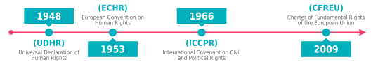

1.1.
De ce această broșură despre Internet și libertatea de exprimare?
Internetul ne-a schimbat semnificativ viețile în ultimii ani, în multe domenii, inclusiv modul în care accesăm informațiile publicate. Dar, cel mai important, a crescut exercitarea drepturilor noastre la libera exprimare atât prin permiterea accesului
la diverse surse de informații, dar și prin democratizarea semnificativă a publicării libere a oricărui tip de informații.
“În lumina accesibilității și capacității sale de stocare și de comunicare a unui vast număr de informații, Internetul joacă un rol important în creșterea accesului publicului la știri și la facilitarea diseminării informațiilor în general.”
Times Newspapers Ltd v. UK (nr. 1 și 2), CEDO, 2009 Case summary
Times Newspapers Limited v. UK (nr. 1 and 2), Cereri nr. 3002/03 și 23676/03, Hotărâre 10 Martie 2009
Curtea Europeană pentru Drepturile Omului a decis că nu a existat un amestec disproporționat asupra libertății presei sub Artiolul 10 al Convenției Europene pentru Drepturile Omului când unui ziar i s-a impus de către curți să publice o notă în arhivele
sale Internet anunțând că două dintre articolele sale se aflau în litigiu de calomnie și nu trebuiau reproduse sau considerate reale fără referință la departamentul său juridic.
Hotărâre: http://hudoc.echr.coe.int/eng?i=001-91706
Rezumate și observații juridice: http://hudoc.echr.coe.int/eng?i=002-1623
Prin urmare, acesta a transformat libertatea de exprimare - în special în mediul online - într-un subiect care ne preocupă pe toți. Nu doar pe jurnaliști sau ONG-uri care se ocupă de libertatea de exprimare.
“Activitatea de exprimare generată de utilizatori pe Internet asigură o platformă fără precedent pentru exercitarea libertății de exprimare.”
Delfi AS v. Estonia 2015 [Marea Cameră], CEDO, 2015 Case summary
Delfi AS v. Estonia (Marea Cameră), Cerere Nr. 64569/09, Hotărâre 16 Iunie 2015
Compania reclamantă deținea unul dintre cele mai mari portaluri de știri din Estonia. În 2006, ca urmare a publicării unui articol pe portal privind o companie de feriboturi, s-au postat unele comentarii sub articol cu amenințări personale și limbaj ofensator
la adresa proprietarului companiei. Delfi AS a șters comentariile ofensatoare la cererea avocaților proprietarului companiei de feriboturi, la aprox. șase săptămâni după publicare. Procedurile de defăimare erau instituite împotriva
companiei reclamante căreia i s-a cerut să plătească 320 euro daune. Considerând ”importantele beneficii care ar deriva din exercitarea libertății de exprimare”, Curtea a reiterat că nu a existat încălcare a Articolului 10 și că “responsabilitatea
pentru discurs defamator sau de orice alt tip ilegal trebuie, în principiu, reținută și constituie un remediu eficient pentru âncălcările drepturilor referitoare la personalitate”.
Hotărâre: http://hudoc.echr.coe.int/eng?i=001-155105
Rezumate și observații juridice:
A devenit, de asemenea, esențial ca informațiile care explică conceptele de bază ale libertății de exprimare și jurisprudența relevantă să fie simplificate și explicate unei largi audiențe ce poate fi interesată de subiect.
“Funcția blogger-ilor și a utilizatorilor populari ai rețelelor de socializare poate fi asimilată cu cea a “câinilor de pază publici” în ceea ce privește protecția oferită de Articolul 10.”
Caz Magyar Helsinki Bizottság v. Ungaria [Marea Cameră], CEDO, 2016 Case summary
Magyar Helsinki Bizottság v. Ungaria, Cerere Nr. 18030/11, Hotărâre 8 Noiembrie 2016
Cazul a fost inițiat printr-o Cerere plasată la Curte de către Comitetul Helsinki din Ungaria după ce autoritățile naționale i-au refuzat accesul la informații cu privire la consiliile de apărare ex officio numite de două secții de poliție. Curtea a considerat
că a existat o încălcare a dreptului la libertatea de exprimare a reclamantului ONG și a emis cele patru criterii pentru a evalua dacă un refuz de acces la informații deținute de stat implică Articolul 10 al Convenție.
Hotărâre: http://hudoc.echr.coe.int/eng?i=001-167828
Rezumate și observații juridice:
În vreme ce, pe acest subiect, au fost publicate multe cărți și alte studii legale pentru judecători sau alți practicieni din domeniul legal, credem că acum este o nevoie chiar mai mare de a simplifica și explica elementele de bază ale libertății de exprimare,
în special în modul în care se aplică în lumea digitală. Toate acestea sunt prezentate prin lumina jurisprudenței actuale a Curții Europene a Drepturilor Omului (CEDO), care ar trebui să fie punctul principal de referință pentru toți utilizatorii
europeni de Internet.
Ideea acestei broșuri a apărut și ca rezultat al unor experiențe personale legate de libertatea de exprimare din ultimii ani:
În primul rând, subiectul pare să fie interesant nu numai pentru jurnaliștii profesioniști dar și pentru diverse alte tipuri de utilizatori ai Internetului care au baze diferite de educație și, în general, nu prea multe cunoștințe legale. Cu toate astea,
toți sunt implicați în comunicarea de informații pe Internet și uneori reclamă încălcarea dreptului lor la liberă exprimare.
În al doilea rând, procesul decizional legat de libertatea de exprimare pare deseori grăbit, fără suficient timp pentru dezbateri publice largi sau utilizarea de rapoarte complete sau detaliate ca bază pentru decizii. Acest lucru este în special adevărat
pentru anumite țări din Europa de Sud-Est. Prin urmare, fragmente din argumentele și concluziile CEDO pot fi puncte de referință larg acceptate și, deci, instrumente folositoare într-o dezbatere.
În al treilea rând, aflați în fața fuxului de informații disponibile în zilele noastre mulți utilizatori caută informații ușor de înțeles, distilate, pentru a-și forma o opinie (și nu blocuri de texte legale ce pot merge foarte departe sau din alte țări).
Dar credem că majoritatea deciziilor și argumentelor pentru libertatea de exprimare din jurisprudența CEDO sunt ușor de înțeles pentru o audiență mai largă, dacă sunt prezentate corespunzător.
“Articolul 10 al Convenției garantează libertatea de exprimare pentru “toată lumea”. Nu se face nici o distincție dacă scopul urmărit este realizarea de profit sau nu.”
Neij și Sunde Kolmisoppi v. Suedia, CEDO, 2013 Case summary
Neij and Sunde Kolmisoppi v. Suedia, Cerere nr. 40397/12, Decizia 19 februarie 2013
Acest caz se referă la plângerea făcută de către cei doi co-fondatori ai sitului “The Pirate Bay”, unul dintre cele mai mari website-uri de distribuire de fișiere torrent, pentru condamnarea lor pentru complicitate în comiterea de crime de încălcare a
Actului de Drept de Autor, care ar fi încălcat libertatea lor de exprimare.
Curtea a declarat Cererea ca inadmisibilă fiind greșit fundamentată. A considerat că diseminarea, sau permiterea diseminării de către alții, de fișiere de orice fel pe Internet, chiar material protejat de drepturi de autor și pentru scopul de obținere
de profit, este acoperită de dreptul de “a primi și împărtăși informații” sub Articolul 10 (Libertatea de exprimare) al Convenției. Cu toate acestea, a considerat că, la condamnarea reclamanților, curțile naționale au respectat un echilibru
corect între interesele în cauză – i.e. dreptul solicitanților de a primi și împărtăși informații și necesitatea de a proteja drepturile de autor.
Hotărâre: http://hudoc.echr.coe.int/eng?i=001-117513
Rezumate și observații juridice: http://hudoc.echr.coe.int/eng?i=002-7408
1.2.
Libertatea de exprimare. De unde începem?
Libertatea de exprimare este un drept fundamental larg folosit, de care se face de multe ori abuz și care e totuși insuficient înțeles.
Când nu ne place ce spune cineva, dorim să fie redus la tăcere sau admonestat.
Când vrem să spunem ceva, aparent pe aceeași linie cu discursul pe care îl dezaprobăm, credem că avem dreptul s-o facem liber.
Dar foarte rar ne gândim de ce avem un drept fundamental la liberă exprimare, la ce folosește și de ce, când și cum va fi limitat acest drept.
Libertatea de exprimare
“este aplicabilă nu numai la “informații” sau “idei” care sunt primite favorabil, văzute ca inofensive sau indiferente, dar se aplică și celor despre care se consideră că ofensează, șochează sau deranjează. Acestea sunt cerințele pluralismului, toleranței și unei gândiri libere în lipsa cărora nu ar exista “societate democratică”
.
Axel Springer v. Germania [Marea Cameră], CEDO, 2012 Case summary
Axel Springer v. Germania [Marea Cameră], Cerere nr. 48311/10, Hotărâre 7 februarie 2012
Compania reclamantă este editorul unui ziar național cotidian de largă circulație care a publicat în septembrie 2004 un articol pe prima pagină despre un star al unei serii populare de televiziune care fusese arestat la festivalul berii de la Munich pentru
posesie de cocaină. Articolul era completat de un articol mai detaliat pe altă pagină. Imediat după apariția articolului, actorul a obținut un ordin de restricție împotriva publicării oricărei publicări ulterioare a articolului. Comania
reclamantă a depus plângere împotriva ordinului impus împotriva raportării arestării și condamnării actorului în chestiune.
The Court a decis că a existat o încălcare a Articolului 10 (Libertatea de exprimare) al Convenției, considerând că restricțiile impuse companiei reclamante nu au fost proporționate rezonabil cu scopul legitim de protejare a reputației sau drepturilor
altora.
Hotărâre: http://hudoc.echr.coe.int/eng?i=001-145700
Rezumate și observații juridice: http://hudoc.echr.coe.int/eng?i=002-9955
Nu există un mod de gândire agreat care să răspundă afirmațiilor de mai sus. Vestea bună este că sunt mulți gânditori de filozofie politică, documente legale sau decizii ale curților de judecată care ne dau niște linii directoare. Și vestea încă și mai
bună este că implementarea legală și juridică a acestui drept în diverse contexte este tot timpul dinamică și oricine poate avea ceva de spus sau poate influența modul în care se implementează o politică. Pentru a face acest lucru, avem nevoie
să înțelegem elementele de bază ale acestui drept.
Mai jos e listat un rezumat al unora dintre conceptele cheie legate de libertatea de exprimare.
Ce este libertatea de exprimare?
“Libertatea de exprimare constituie unul dintre elementele de bază esențiale într-o societate democratică pentru progresul său și pentru realizarea personală a fiecărui individ.”
Axel Springer v. Germania [Marea Cameră], CEDO, 2012 Case summary
Axel Springer v. Germania [Marea Cameră], Cerere nr. 48311/10, Hotărâre 7 februarie 2012
Compania reclamantă este editorul unui ziar național cotidian de largă circulație care a publicat în septembrie 2004 un articol pe prima pagină despre un star al unei serii populare de televiziune care fusese arestat la festivalul berii de la Munich pentru
posesie de cocaină. Articolul era completat de un articol mai detaliat pe altă pagină. Imediat după apariția articolului, actorul a obținut un ordin de restricție împotriva publicării oricărei publicări ulterioare a articolului. Comania
reclamantă a depus plângere împotriva ordinului impus împotriva raportării arestării și condamnării actorului în chestiune.
The Court a decis că a existat o încălcare a Articolului 10 (Libertatea de exprimare) al Convenției, considerând că restricțiile impuse companiei reclamante nu au fost proporționate rezonabil cu scopul legitim de protejare a reputației sau drepturilor
altora.
Hotărâre: http://hudoc.echr.coe.int/eng?i=001-145700
Rezumate și observații juridice: http://hudoc.echr.coe.int/eng?i=002-9955
-
Este un instrument important al libertății de conștiință
-
Permite alegeri conștiente bazate pe aderarea la anumite valori și, prin urmare, asigură autonomie individuală și definește identitatea fiecărei persoane
-
Contribuie la cunoaștere și înțelegere prin dezbateri privind valori sociale și morale și prin permiterea unei piețe de idei
-
Permite comunicarea de idei politice și contribuie, deci, la democrație
-
Crește toleranța permițând celorlalți să se exprime
-
Contribuie la dezvoltarea artistică și facilitează progresul academic și științific
1
În ce constă libertatea de exprimare?
-
dreptul de a disemina informații, în toate formele, și;
-
dreptul celorlalți de a le primi.
Libertatea de exprimare
„se aplică nu numai la conținutul informațiilor ci și la mijloacele de diseminare, deoarece orice restricții impuse asupra mijloacelor intră în conflict cu dreptul de a primi și comunica informații”.
Özturk vs Turcia [Marea Cameră], CEDO, 1999
De ce limităm libertatea de exprimare?
-
Pentru că dăunează exercitării altor drepturi (dreptul la viață privată, dreptul la o judecată corectă, dreptul la libera gândire, conștiință sau religie) sau încalcă limitele drepturilor fundamentale ale omului (interzicerea discriminării și interzicerea
abuzului drepturilor)
-
Pentru că nu este făcută cu bună credință (publicarea faptelor insuficient verificate, limbaj pur ofensator care nu servește dezbaterii de interes public etc.)
-
Pentru că este dăunătoare și nu este de interes public
-
Pentru că pune în pericol siguranța democrației sau a legii și ordinii (divulgarea de secrete de stat, riscul de încălcare a păcii etc.)
“După cum e stipulat în Articolul 10, libertatea de exprimare este supusă unor excepții care trebuie, totuși, interpretate strict, și necesitatea unor restricții trebuie stabilită în mod convingător.”
Axel Springer v. Germania [Marea Cameră], CEDO, 2012 Case summary
Axel Springer v. Germania [Marea Cameră], Cerere nr. 48311/10, Hotărâre 7 februarie 2012
Compania reclamantă este editorul unui ziar național cotidian de largă circulație care a publicat în septembrie 2004 un articol pe prima pagină despre un star al unei serii populare de televiziune care fusese arestat la festivalul berii de la Munich pentru
posesie de cocaină. Articolul era completat de un articol mai detaliat pe altă pagină. Imediat după apariția articolului, actorul a obținut un ordin de restricție împotriva publicării oricărei publicări ulterioare a articolului. Comania
reclamantă a depus plângere împotriva ordinului impus împotriva raportării arestării și condamnării actorului în chestiune. The Court a decis că a existat o încălcare a Articolului 10 (Libertatea de exprimare) al Convenției, considerând
că restricțiile impuse companiei reclamante nu au fost proporționate rezonabil cu scopul legitim de protejare a reputației sau drepturilor altora.
Hotărâre: http://hudoc.echr.coe.int/eng?i=001-145700
Rezumate și observații juridice: http://hudoc.echr.coe.int/eng?i=002-9955
Cum ar trebui să fie aceste limite?
-
Asigurate prin lege
-
Să urmărească un scop legitim (protejarea altor drepturi sau interese)
-
În mod necesar într-o societate democratică (trebuie să existe o necesitate socială presantă)
-
Proporțional
Exprimarea poate lua diverse forme: cuvinte vorbite sau scrise, lucrări de artă, filme, muzică, teatru, alte arte, evenimente sau spectacole, inclusiv distrugerea de proprietate când un asemenea act are un conținut de “discurs” (exemple din viața reală
pot include arderea steagului național, aruncarea de vopsea pe o statuie). Reținerea de la exprimare este de asemenea o formă a dreptului libertății de exprimare (dreptul la tăcere).
Libertatea de exprimare acoperă un spectru larg de comunicații, de la exprimarea politică la cea academică, artistică sau comercială, fiecare dintre acestea având nivele diferite de protecție. Libertatea de exprimare include dreptul de acces la informație
care, în cazul jurnaliștilor, poate însemna permiterea accesului într-o instituție publică, inclusiv tribunale, sau la un document public, inclusiv date de la serviciile secrete. În vreme ce pentru cetățeni poate însemna lipsa cenzurii la
accesul la informații pe Internet.
Exprimarea se poate face prin diverse canale: media tipărită, cărți, scrisori, postere, canale de difuzare și – desigur în ultimii ani - în special prin Internet.
1.3.
1.3. Libertatea de exprimare ca drept fundamental
Ca parte din suita drepturilor omului, dreptul la libertatea de exprimare este garantat de un număr relevant de documente legale și tratate internaționale.
Declarația Universală a Drepturilor Omului adoptată de Adunarea Generală a Națiunilor Unite în 1948 garantează dreptul la libera exprimare în Articolul 19, și la fel Acordul Internațional privind Drepturile Civile și Politice adoptat de același organism
în 1966; acesta garantează acest drept tot în Articolul 19.
Carta Drepturilor Fundamentale a Uniunii Europene a fost adoptată în 2000 de către Parlamentul European, Consiliul de Miniștri și Comisia Europeană și a intrat în vigoare în 2009, și este considerată “Constituția” Uniunii Europene. Aceasta protejează
de asemenea dreptul la libertatea de exprimare în Articolul 11.
Convenția Europeană a Drepturilor Omului a Consiliului Europei, deschisă spre semnare în 1950 are o relevanță deosebită incluzând libertatea de exprimare în Articolul 10. A intrat în vigoare în 1953 și a fost amendată, în decursul anilor, prin adoptarea
de 16 Protocoale
2
. Unele protocoale ale Convenției nu sunt încă ratificate de toate țările. Curtea Europeană a Drepturilor Omului este un organism care supraveghează implementarea Convenției de către cele 47 state membre ale Consiliului Europei.
Deoarece Convenția Europeană a Drepturilor Omului reprezintă principalul instrument pentru statele Consiliului Europei, această broșură se concentrează în principal pe jurisprudența elaborată de Curtea Europeană a Drepturile Omului.

Articolul 10 al Convenției Europeane a Drepturilor Omului
Libertatea de exprimare
- 1
-
Orice persoană are dreptul la libertate de exprimare. Acest drept include libertatea de opinie şi libertatea de a primi sau a comunica informaţii ori idei fără amestecul autorităţilor publice şi fără a ţine seama de frontiere. Prezentul articol nu împiedică Statele să supună societăţile de radiodifuziune, cinematografie sau televiziune unui regim de autorizare.
- 2
-
Exercitarea acestor libertăţi ce comportă îndatoriri şi responsabilităţi poate fi supusă unor formalităţi, condiţii, restrângeri sau sancţiuni prevăzute de lege care, într-o societate democratică, constituie măsuri necesare pentru securitatea naţională, integritatea teritorială sau siguranţa publică, apărarea ordinii şi prevenirea infracţiunilor, protecţia sănătăţii, a moralei, a reputaţiei sau a drepturilor altora, pentru a împiedica divulgarea informaţiilor confidenţiale sau pentru a garanta autoritatea şi imparţialitatea puterii judecătoreşti.
.
1.4.
Cum trebuie înțeleasă această broșură
Scopul dreptului la libertatea de exprimare se bazează pe schimbarea conceptelor filozofice, politice și legale. Trebuie analizat în contextele specifice geografice, legale și sociale. În majoritatea timpului implică un exercițiu de echilibrare cu alte
drepturi și valori fundamentale.
Prin urmare, cazurile prezentate în această broșură ar trebui să aibă doar o valoare de referință. O jurisprudență ca cea a CEDO este în permanentă schimbare și uneori în conflict cu ea însăși. Poate fi uneori chiar supusă criticii deoarece, când și când,
poate avea rezultate dezamăgitoare pentru cei care promovează drepturile fundamentale la libertatea de exprimare și accesul la informație. În plus, dezvoltările tehnice ale Internetului pot schimba anumite presupuneri pe care le avem azi și
care ar putea fi incluse în decizii viitoare.
Cu toate acestea, o jurisprudență ca cea CEDO poate fi una vizionară de multe ori și are o valoare importantă în a promova standardele clasice ce asigură în mod legal drepturile la liberă exprimare și de acces la informație.
Distilarea jurisprudenței actuale CEDO vine cu un cost care merită menționat. În primul rând, informațiile din această broșură nu pot constitui în nici un caz consiliere juridică. În al doilea rând, editorii au fost nevoiți să limiteze informațiile pe
care le puteau prezenta în această broșură, o alegere care pentru unii profesioniști din domeniul juridic ar putea fi un neajuns. De asemenea, selectarea domeniilor și a cazurilor ne-a forțat să acoperim anumite aspecte importante într-o manieră
foarte sumară – cum ar fi chestiuni ca “discursul instigator la ură” sau “protecția surselor jurnaliștilor”.
De asemenea, pentru a simplifica textul în versiunea broșură, anumite citate au fost lăsate fără referințe interne la alte cazuri sau documente CEDO. De asemenea, numele cazului este indicat la minim, adică “Numele reclamanților v. țară, an”. Cazurile
decise de către Marea Cameră sunt marcate ca atare. Toate caracterele îngroșate din citate aparțin editorilor pentru a sublinia principalele cuvinte cheie relevante pentru cititor. Notele de subsol sunt incluse la finalul broșurii.
În versiunea web de la https://cases.internetfreedom.blog sunt disponibile mai multe detalii care includ un scurt rezumat al fiecărui caz și linkuri către textul în sine al hotărârii/deciziei sau către rezumatele legate.
Trebuie să recunoaștem că munca noastră a fost ajutată nu numai de faptul că toate informațiile relate de jurisprudența CEDO sunt disponibile public pe Internet, dar și datorită existenței diverselor proiecte și publicații – toate disponibile online -
care au sistematizat sau analizat în mai multe detalii o mare parte a jurisprudenței CEDO legate (și de) Articolul 10.
Dăm aici o listă a celor mai importante documente, în special pentru utilizatorii care ar vrea sau au nevoie să intre în detaliu cu privire la anumite specificități ale libertății de exprimare:


 Aspecte cheie relevante din cazurile CEDO:
Aspecte cheie relevante din cazurile CEDO: